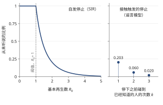

第 6 章 遗忘与热度消退
在疾病流行的易感-感染-康复模型（susceptible–infected–recovered model，简称 SIR）里，感染的人把病传给别人一阵，然后康复；Shiller（2017）指出，这个模型也可以描述一个想法靠口碑（word of mouth）的流传（工作论文版）。他研究的是叙事（narrative），即靠人们反复转述而传播（propagation）开来的流行故事。在这个模型里，从少数几个传播者开始，已经感染、还能传给别人的人数先升后降（工作论文版）。为了追踪叙事，他在 ProQuest 收录的 1900 年至 2016 年的新闻和报纸里，数含有某个词或短语的文章，算出它们每年占全部文章的百分比（工作论文版的数字）。“stock market crash”（股市崩盘）这个短语在报纸上有过两次来得很快的流行，每次都在一年之内到顶；1929 年崩盘的叙事一直延续到今天，只是书里比报纸上多（工作论文版的数字）。Shiller 写道，1987 年那次流行看起来比 1929 年那次强得多，它的力量来自人们对 1929 年的记忆，而且考虑到词频作为叙事量度的局限，它实际上可能并不更强（工作论文版的数字）。
在他的图 6 里，报纸上“stock market crash”这个短语所占的比例早在 1987 年之前就已回落，对 1929 年的记忆则没有淡去（本书的判断）。词频跟踪的是现在谈论一个故事的人，或者新听说它的人，两者都不是听说过它的人数（本书的判断）。Shiller 指出，在一场流行病里，公众的注意力（attention）往往集中在感染者的人数上，而他的模型里的感染者就是正在积极传播的人（工作论文版）。1 本章是 1.7 节树干一的第一章，讲消息怎样传开。第 5 章的根模型（root model）是本书最简单的信息市场，在那里，知道的人从不停止转告，也从不忘记，本书把这条假设叫作永久传播（permanent spreading）；本章让传播者停下来。6.3 节网络上的结果还去掉了均匀混合，6.6 节的窗口还去掉了无限注意，两者都只是连同永久传播一起去掉，所以表 5.1 把本章放在括号里列出。传播者停下的方式有两种（6.2 节和 6.3 节）；在任何人都可能碰到任何人时，两种方式在两件事上结果相反，一是一个故事要传开是否需要一个最低的强度，二是它早早断掉的机会（6.4 节）。除了 Shiller 的词频和一份推特数据样本，本章依据的都是背后没有数据的模型（6.7 节）。
6.1 停止传播与遗忘
永久传播是根模型的默认假设（default assumption）之一，列在 5.8 节的表 5.1 里。1.6.4 节指出，任何阈值都以传播者会停下为前提，阈值在哪里取决于他们怎样停下（本书的判断）。去掉永久传播，就有两个问题，一是传播者是停止转告还是忘了，二是什么让传播者停下。
按 Shiller 的转述，Bartholomew（1982）主张，把流行病模型的各种变体用到想法的传播上时，用 Shiller 的话说，“我们不应假定停止感染别人与遗忘是同一回事”（工作论文版）。同一段还说，一个人们还记得、只是很少谈起的旧想法，可能影响人的行为（工作论文版）。Shiller 自己说，SIR 模型移出传播者的速率或许可以说成遗忘的速率（工作论文版），所以两种读法在他的论文里都有。
本书把两者分开，因为它们对知情比例（informed fraction），即听说过的人所占的比例，以及对价格的作用不同（本书的判断）。停止传播（stopping spreading）只结束转告别人这一种状态。停下的人仍然知道，也保留自己的信念（belief），所以知情比例保持原样，按 5.3 节的价格规则，价格也保持原样。遗忘（forgetting）让一个人在某一时刻知道的东西，即这个人的信息集（information set），变小；知情比例下降，价格朝从未听说的人的信念回落。按本书的观测律（observation law），人只能靠观测（observation）知道新东西，也可能遗忘（3.3 节），而告诉别人不会减少讲的人自己知道的东西（表 1.1）。按这些规则，在一个封闭的人群里，即没有人加入、也没有人离开的人群里，知情比例只能通过遗忘下降（本书的判断）。
传播者停下的原因有两类。在自发停止（spontaneous stopping）下，传播者过一阵就自己不说了，不管碰到的是谁；6.2 节的流行病模型是这样，遗忘和热度消退（attention decay）也是这样，热度消退即一条消息随着时间推移受到的注意越来越少。在接触触发的停止（contact-triggered stopping）下，传播者碰到一个已经知道的人就停下，他由此得知这条消息已经失去了新闻价值；6.3 节的谣言模型（rumor model）是这样。Castellano、Fortunato 与 Loreto（2009）描述了同样的对照，他们写道，在流行病里，感染的人以某个速率自发康复，而人们通常在发现想告诉的人已经知道时，就停止散布传言（rumor）。
Daley 与 Kendall（1964）用同样的三类人把两者并排比较，发现接触时停下让系统的表现与流行病截然不同，而且是熟悉流行病的人预料不到的。他们说自己的目的是强调“不彻底重新审视各项假设，就把为流行病学设计的公式搬过来”的危险。2
6.2 自发停止的传播者
Shiller 把三个方程的 SIR 模型写成 （工作论文版）。这里 是易感者的人数，易感者即还没有染上这个想法的人； 是感染者的人数，感染者即正在积极传播它的人； 是康复者的人数，康复者即已经停下、不会再染上它的人。总人数 不变。在一个充分混合的人群里，新染上这个想法的速率是恒定的传染率（contagion rate） 乘以 再乘以 ，传播者停下的速率是恒定的康复率（recovery rate） 乘以 （工作论文版）。为简单起见，Shiller 假设康复按指数衰减的方式发生（工作论文版），所以每个传播者在每一时刻停下的机会都一样，不管他已经传播了多久（本书的推导）。Shiller 补充说，如果这两个速率是叙事本身固有的，假定它们不变可能说得通（工作论文版）。数学框 6.1 用符号写出这个模型。
对叙事来说，传染率是一个比例，即在所有相遇里，传播者把对方说服到愿意把故事继续传下去的那些相遇所占的比例；一个人染上之前，可能需要许多次相遇（工作论文版）。这个意义上的感染比听说过要求得多，所以曾经感染的人数可以少于听说过的人数（本书的判断）。本章在 6.4 节和 6.5 节把 SIR 与谣言模型并排时，把染上这个想法读作听说了它，于是听说过的人所占的比例是 ；不这样读， 只给出从未听说的人所占比例的一个上界（本书的判断）。
基本再生数（basic reproduction number） 是一个传播者在还没有人有这个想法的人群里平均直接传染的人数；用 Shiller 的符号，它是 （本书的推导）。在均匀混合（homogeneous mixing）下，即任何人都可能随机碰到任何人，相遇的两个人用的是不同的来源，这个模型有一个传播阈值（epidemic threshold），即传播要传开， 必须超过的那个值。只有 时，单个传播者才能引出一次波及人群中一定比例的爆发。Daley 与 Kendall 描述的确定性流行病模型，即只跟踪平均数、不计偶然的模型，也有同一类阈值，一开始的一点感染能引出一场可观的流行，当且仅当易感者的初始人数超过一个阈值。在网络上，阈值会移动（第 7 章）。
在这个模型里，曾经感染的人数趋于一个严格小于 的极限，因为传播者康复以后越来越少（工作论文版）。 越高，流行的规模越大，不论 或 本身多大； 不变时， 越高，流行来得越快（工作论文版）。Shiller 给出了还没感染的人数与康复者人数之间的关系，第一个传播者少到可以不计时，这个关系只凭 就定下从未染上这个想法的人所占的比例， 时这个比例是 1（本书的推导；数学框 6.1；6.4 节）。传播者最多的时候，还没感染的人所占的比例已经降到 ，所以一个跟踪传播者的计数到达峰值时，还有这么大比例的人没有染上这个想法（本书的推导）。在 6.5 节用的 下，这个比例是 40%（本书的计算）。这些关系在模型之内、按它的前提成立。
在易感-感染-易感模型（susceptible–infected–susceptible model，简称 SIS）里，离开感染状态是自发的，SIR 与 SIS 都是这样；停下的人可以再次染上，这样的循环在某些条件下可以永远持续；只有超过阈值，它才能稳定在一个固定的传播者比例上，即地方流行状态（endemic state），而在 SIR 里，阈值标志的是波及一定比例的一次爆发。Shiller 介绍了一种变体，即易感-感染-康复-易感模型（susceptible–infected–recovered–susceptible model，简称 SIRS），康复的人在这个模型里逐渐重新变得易感；视参数而定，传播者的人数在这里可能趋于一个大于零的水平，于是传播者实际上永远不会消失（工作论文版）。
Shiller 还提出，对想法来说，传染率应当随时间下降，因为这个想法渐渐不那么令人兴奋了（工作论文版）。这就是热度消退。它属于自发停止，因为这种下降与传播者碰到谁无关（本书的判断）。上面的阈值与终态关系对恒定的速率成立，遗忘的速率也在其中。传染率随时间下降、又没有人移出时，最终的比例由传染率随时间的累加决定（本书的推导），上面那些关系不能照搬。
对每个人来说，传播是随机的；一个级联（cascade），即从一个种子开始的一串转告，可能早早断掉。在自发停止和均匀混合下，对随机模型来说， 只是爆发的必要条件，即使超过了它，在传播者还少的时候，偶然性也可能让传播断掉。以恒定速率自发停止时，这样早早断掉的机会不随人群变大而缩向零，因为在早期，每个传播者不管别人知道什么，都以自己的速率停下，所以开头是一个分支过程（branching process），即每个传播者引出随机多个新的传播者，这个过程断掉的机会与 无关（本书的推导）。这个机会有多大，取决于每个传播者传染的人数怎样分布（第 8 章）。
Kempe、Kleinberg 与 Tardos（2003）的独立级联模型（independent cascade model）在一张网络上运行。一个节点刚变为激活时，对每个还没激活的邻居只有一次激活的机会，成功的概率是为这一对节点设定的，与此前的历史无关；不论成功与否，它都不再对这个邻居作任何尝试。他们关注的是渐进情形（progressive case），即激活的节点永远不会变回去，所以一个节点停止传播而不遗忘（本书的判断）。Pastor-Satorras 等（2015）说这个模型本质上是一个不均匀的 SIR，说它不均匀，是因为把想法传下去的机会因连线而异（本书的判断）。我们把它读作每个传播者只传播一步的 SIR 模型（本书的判断）；数学框 6.2 写出这种读法和它的限度。Kempe、Kleinberg 与 Tardos 自己问的是，从哪些节点开始能让级联最大（第 15 章）。3
6.3 消息过时就停的传播者
Daley 与 Kendall（1965）考虑一个封闭、均匀混合的人群，分成三类，即没有听说过这条传言的 人，一开始是 人；传播者 人，一开始有一个；听说过、但已经不再传播的 人，一开始没有。传播者碰到没听说过的人，就告诉他。两个传播者相遇，两人都停下；传播者碰到已经停下的人，这个传播者停下。三种相遇发生的速率分别与 、 和 成正比，三种用同一个常数，因为它只是量一对给定的人多久相遇一次。碰到第一个已经知道的人就停下，用他们的话说是“一个极端的假设”，选它是因为它尽可能简单，又不引入参数。对比之下，在流行病里，人们离开传播者这一类的速率只与 成正比。所以在谣言模型里，一个传播者停下的机会随已经知道的人数上升，在流行病里不变（本书的推导；数学框 6.1）。
在这些规则下没有阈值。最终听说这条传言的人所占的比例，与人群的大小近似无关；在 1964 年的短文里，这个比例总是约 0.80，几乎与一开始没听说过的人数无关。早期几乎没有人知道，所以一个传播者在碰到一个知道的人之前，会先碰到许多没听说过的人，停下之前告诉的人数随人群变大而增多（本书的推导）。
传言仍然可能几乎马上就断掉。在均匀混合下，除了第一个传播者之外只有一个人听说的机会约为 ； 时，每次运行约为 1/2000。
从未听说的比例依赖五条前提，即封闭的人群、均匀混合、消息没有外部来源（external source）、只有一个最初的传播者，以及传播者碰到第一个已经知道的人就停下。在这些前提下，按大人群的确定性近似，从未听说的比例 满足 它较小的根约为 0.203，所以最后约 80% 的人听说。在他们的随机模型里，听说的比例平均约为 0.80，在一个双峰分布的主峰里方差约为 ，人群趋于无穷大时，这个峰包含全部的概率；小峰就是上面说的早早断掉（第 8 章）。这些是数学结果，没有对照过任何真实消息的覆盖率。自发的遗忘、稀疏的网络或者持续的外部来源，都会给出不同的覆盖率，所以这个结果不能读作口碑总会漏掉五分之一的人。4
Daley 与 Kendall 还让传播者卷入 次“不成功的转告”之后才停下，在这里就是碰到已经知道的人 次之后。在大人群的确定性版本里，、2、3 时，从未听说的比例约为 0.203、0.060 和 0.020。在另一个版本里，传播者只以一定的概率讲这条传言，在别人把它讲给自己听、或者得知听的人已经知道时，也只以一定的概率停下。在大人群的确定性版本里，不论这两个概率取什么值，从未听说的比例都有一个上界，所以至少约 71.5% 的人听说（本书的计算；数学框 6.1）。与上面的比例一样，这些值也没有对照过任何真实消息的覆盖率。
后来有两个结果，我们只是从综述的转述里知道，它们说明没有阈值这一点依赖均匀混合，也依赖传播者只在接触时停下（本书的判断）。传播者如果还会以自己的速率遗忘，阈值就又出现了，在网络上表现得与 SIR 的阈值一样（第 7 章），因为遗忘项与传播者的密度成线性关系，在传播者少的时候占主导（Nekovee 等，据 Pastor-Satorras 等以及 Castellano、Fortunato 与 Loreto 的转述，两篇综述都没有说出所用的方法）。小世界网络（small-world network）即多数连线在近邻之间、一部分连线随机改接的网络；在这样的网络上，按 Daley 与 Kendall 的规则传播的传言，在改接的比例低于一个临界值时停在源头附近，而且网络变大时这个临界值保持有限（Zanette，据 Castellano、Fortunato 与 Loreto 以及 Pastor-Satorras 等的转述）。本节网络上的结果，以及专门讨论网络的第 7 章，都是连同永久传播一起去掉均匀混合（表 5.2）。5
Shiller 把随时间下降的传染率和 Daley 与 Kendall 的规则，当作给大致同一个概念建模的两种方式（工作论文版）。前一种与传播者碰到谁无关，是自发停止；后一种由接触触发（本书的判断）。从未听说的比例和没有阈值这两点，只对接触触发的停止成立。
6.4 两种停止的对照
图 6.1 把两种终态并排放在一起（本书的计算）；它的左格把染上这个想法读作听说了它（6.2 节）。6

直到 ，左格都停在 1，因为没有爆发能传开；那里就是阈值。过了阈值， 越大，从未听说的人越少， 时约 0.42，2.5 时约 0.11，5 时约 0.007，这些是 6.2 节前提下的模型值（本书的计算）。
在均匀混合下，以恒定速率自发停止把阈值放在 ，从一个种子开始的级联可能早早断掉，断掉的机会不随人群变大而缩小（本书的推导）。在同样的混合下，接触触发的停止没有阈值，早早断掉的机会是 的量级，从未听说的比例只由停止的规则决定（6.2 节和 6.3 节）。把染上这个想法读作听说了它，在大人群里两者的最终比例可以相同，、3、4 的 SIR 与 、2、3 的谣言模型留下同样多没听说的人（本书的推导；数学框 6.1），所以单看最终的比例，看不出传播者怎样停下（本书的判断）。
6.5 停止传播之后的价格
再看 2.3 节和 2.4 节的新药报告。一张合约在一种新药通过最后阶段的试验时支付 1 美元。先验概率（prior probability），即有任何消息之前的机会，是 ；有一份报告说试验成功，这类报告有 80% 的时候是对的，听到它的人把成功的机会定为 ，与第 5 章相同。这个例子依赖三组前提。价格按 5.3 节的规则决定，带着那里的前提，其中有财富相等、对数效用（log utility）和不从价格学习（no learning from prices），并且先不管噪声交易者（noise trader）的需求。听说的人在某个时候不再转告，但不会忘记，所以保留自己的信念。在 Daley 与 Kendall 的五条前提下（6.3 节），消息只靠口碑传播。传言断掉以后，比例为 、约 0.203 的人从未听说，这是没有对照过任何真实消息覆盖率的模型值（6.3 节）；按价格规则，知情比例为 ，价格是 约为 0.56（本书的计算）。7 没有外部来源时，价格就停在那里，因为光靠口碑到不了 0.632。这个平台还依赖不从价格学习。从价格里读出别人消息的交易者，不需要更多的口碑，也可能把价格推得更接近 0.632，不过 5.7 节发现，这样的学习未必让价格揭示更多（本书的判断）；第 16 章讨论从价格学习。公开披露（public disclosure），即把消息公开发布，只通过看到它的人把价格推得更远（本书的判断）；到结算（settlement），即合约兑付的时候，价格跳到 1 或 0（5.4 节）。如果传播者碰到已经知道的人两次或三次才停下，价格停在约 0.61 或 0.63；在大人群的确定性版本里，传播者以一定的概率转告、以一定的概率停下时，价格不低于约 0.54（本书的计算）。
遗忘把价格往另一个方向拉。如果听说过的人忘了、回到先验概率，价格就朝 0.30 回落（本书的判断）。SIR 给出一个算出来的对照，带着 6.2 节的前提和 5.3 节的价格规则，条件是 ，第一个传播者少到可以不计，染上这个想法读作听说了它，财富相等，忘记的人回到先验概率，而且与 SIR 里一样，不会再次染上。如果移出就是遗忘，Shiller 说过它或许可以这样描述，那么只有正在传播的人持有 0.632 的信念；他们最多时约占人群的 23%，价格最高约为 0.38，最后回到 0.30。如果移出只是停止传播，按 Bartholomew 的区分，价格最后接近 0.60（本书的计算）。
从未听说的人只能从公开披露得知这条消息，所以留给公告（announcement）的价格反应取决于停止的规则；在谣言模型里，传言断掉以后，这个反应与口碑多早开始关系不大（本书的推导）。这一点还没有检验过。检验需要社交媒体上的讨论量和公告前后的价格，本书还没有收集这些数据（第 12 章）。
报纸和搜索的计数跟踪的是新来的人或者正在谈论的人（本书的判断），所以一个已经回落的计数，既说明不了价格已经跟上，也说明不了听说过的人已经忘了。
6.6 作为选择的停止
Duffie、Malamud 与 Manso（2009）让人们自己选择花多大力气去找别人交换信息。他们解出一个大人群里信息怎样在均衡（equilibrium）中随时间分享，在这个人群里，每个个体一开始都有一些关于某个随机变量的信号，这个变量人人都关心。不确定性是正态的，即服从钟形曲线，与本书的是非事实不同；个体有进有出，研究的均衡是平稳的，即对整个人群来说不随时间变。给定别人怎样做，一个个体碰到别人的速率与这个个体当前选择的努力成正比，两个个体相遇时，分享各自知道的东西。
如果搜寻的成本随努力上升，而且每多一份努力都比上一份更贵，那么把别人的信息和努力当作给定，一个个体的最佳努力随着它自己的信息变得更精确而下降，因为对已经知道得更多的个体来说，再多一些信息就没有那么值钱。搜寻成本与努力成正比时，存在这样的均衡，个体以允许的最大努力搜寻，直到信息达到足够的精度，之后以允许的最小努力搜寻，这种规则叫作触发策略（trigger policy）。信息较多的个体先达到那个精度，所以最先降低努力（本书的判断）。允许的最小努力可以大于零；如果大于零，降到最低的个体仍会碰到别人，只是次数少一些，每次相遇照样分享信息（本书的判断）。
在 SIR 里，每个传播者在每一时刻停下的机会都一样，由固定的康复率决定（6.2 节）；在这里，降低努力的时刻是个体自己选的，取决于它已经知道多少（本书的判断）。第 19 章讨论搜寻有成本的模型。8
Weng、Flammini、Vespignani 与 Menczer（2012）为模因（meme）在推特上争夺注意力建模，模因即用户转发的一段内容，例如一个话题标签。在他们的基本模型里，网络不变；它是从推特的关注者网络里抽出的一个有向样本，有 个用户。有限注意（limited attention）即人没法顾及一切；他们为它建模的办法，是让一条帖子只在用户的列表或记忆里停留有限的时间；携带一个模因的最后一条帖子从用户的列表或记忆里消失时，用户就忘了这个模因。他们用一条帖子在屏幕和记忆里停留的时间来量屏幕和记忆的容量，在他们的标准运行里是一个时间单位，即模型时钟的一个单位，等于与用户数一样多的步数。本书把这段时间叫作停留窗口（dwell window）。
于是同一个窗口既决定一条帖子能看到多久，也决定它能记住多久。它是有限注意的一种形式，即第 10 章的主题，也是自发的那一种遗忘，因为一条帖子过了固定的时间就离开，不管还有谁看到过它；这一个参数去掉了根模型的两条默认，即永久传播和无限注意（unlimited attention），无限注意即人人都看到并用上全部的信息（本书的判断）。他们的数据分不开一条帖子能看到多久和能记住多久，而按 5.3 节的价格规则，一条帖子离开屏幕，只有同时离开记忆，才会让价格变动（本书的判断）。窗口取 0.1 个时间单位时，他们称之为较强的竞争，模型给不出数据里许多长寿的模因；取 5 个单位时，模型既给不出极其流行的模因，也给不出极其活跃的用户。
作者写道，他们的发现表明，社交网络的结构加上对有限注意的争夺，是模因的流行程度、持续时间和用户的活跃程度出现巨大差异的“一个充分条件”，不需要假设有些想法本身更好；他们又说，对于内在价值不起作用这一点，他们的结果“并不构成证明”。第 10 章把这样的窗口与一个人能吸收多少的上限作比较。9
6.7 本章引用的实证证据
Shiller（2017）算出 ProQuest 收录的 1900 年至 2016 年新闻和报纸里含有某个词或短语的文章每年所占的比例（工作论文版的数字），本章只用这些比例是什么、他的曲线怎样起落，并带着他自己对词频的提醒。Weng 等（2012）收集了 2010 年 10 月至 2011 年 1 月间 1,250 万用户的 1.2 亿多次转发，带有 130 万个话题标签，这是他们方法部分写的时期，不过他们有些图里的数据跨度更长（本书的判断）。他们把模型的运行结果与这些数据对照（6.6 节）。其余的都是模型结果。SIR 的阈值与终态关系、早早断掉的机会、Kenah 与 Robins 的结果（数学框 6.2），以及 Duffie、Malamud 与 Manso 的触发均衡，都是背后没有数据的数学结果。Daley 与 Kendall 的结果也是，其中包括从未听说的比例、碰到 次时它的值，以及数学框 6.1 的上界；它们都没有对照过任何真实消息的覆盖率（6.3 节）。Daley 与 Kendall 用 做的 100 次模拟和本章背后的代码，都是拿模型对照模型自己（本书的判断）。10
6.8 交易者的自查清单
没有一个问题说该买什么、卖什么，答得好也不能让一笔交易变得安全（本书的判断）。
- 停下了还是忘了？ 核对：一个故事的谈论平息下来时，问一问人们是不再转告了、看不到它了，还是忘了它（6.1 节、6.5 节和 6.6 节）。按 5.3 节的价格规则，只有遗忘把价格朝先验概率拉回，所以在没有别的消息时，谈论回落而价格不动，合乎停止传播；价格回落，合乎遗忘；一条帖子离开屏幕，只有同时离开记忆，才会把价格拉回去，而 Weng 等的数据分不开这两者（本书的判断）。
- 传播者怎样停下？ 核对：他们是过一阵就不再说，不管碰到谁，还是发现听的人已经知道时停下（6.2 节和 6.3 节）？在均匀混合下，两者在阈值和早早断掉上给出相反的结果（6.4 节），而在这些模型里，只有在接触触发的停止下，传播者停下的机会才随已经知道的人数上升（本书的推导；6.3 节）。
- 计数量的是什么？ 核对：把一串提及次数或搜索次数读作知道的人数之前，先标明它数的是刚听说这个故事的人，还是正在谈论它的人（本书的判断）。在 SIR 里，正在传播的人数到达峰值时，还有 的比例没有染上这个想法（本书的推导；6.2 节）。
- 谁还没听说？ 可检验：留给公告的价格反应取决于停止的规则；在谣言模型里，传言断掉以后，这个反应与口碑多早开始关系不大（本书的推导；6.5 节）。本书还没有检验它（第 12 章）。
- 知道最多的人还在找吗？ 核对：在 Duffie、Malamud 与 Manso 的触发均衡里，搜寻的努力由个体选择、搜寻成本成比例时，信息较多的人先把搜寻降到最低（本书的判断；6.6 节）。一个个体搜得勤，也提高别人配对的速率，所以在这一点成立的地方，用早期传播拟合出来的恒定停止率，可能高估消息传到其余的人有多快（本书的推论）。
6.9 小结
- 本章让根模型的传播者停下来。停止传播与遗忘是两回事（Bartholomew，据 Shiller 的转述）；按 5.3 节的价格规则，停止传播让知情比例和价格停在原处，遗忘则让两者都变动（本书的判断）。
- 以恒定速率自发停止时，例如 SIR、SIS 和遗忘，在均匀混合下，单个传播者引出爆发需要 ，从一个种子开始的级联可能早早断掉，断掉的机会不随人群变大而缩小（本书的推导）。这些模型关系不能照搬到热度消退上，热度消退即随时间下降的传染率。
- 在接触触发的停止下，例如 Daley 与 Kendall 的谣言模型，均匀混合下没有阈值，几乎马上就断掉的机会约为 。在封闭的人群、均匀混合、没有外部来源、一个最初的传播者、碰到第一个知道的人就停下这些条件下，约 20% 的人从未听说；这个数学结果没有对照过任何真实消息的覆盖率。
- 按 5.3 节的价格规则和 Daley 与 Kendall 的前提，传播者停下但不忘记时，新药报告的价格停在 0.56 附近，直到公开披露或结算（本书的计算）；遗忘会把它朝 0.30 拉回（本书的判断）。
- 在 Duffie、Malamud 与 Manso 的模型里，搜寻的努力由个体选择、搜寻成本成比例时，存在这样的均衡，个体努力搜寻，直到信息够精确，然后降到最低，所以信息较多的人先降（本书的判断）；SIR 的传播者则以固定的速率停下。
- Weng 等的停留窗口既是一个注意窗口，也是遗忘，他们的数据分不开这两者（本书的判断）。
6.10 写给量化读者的数学框
数学框 6.1 两种停止的符号形式
这里的 、、、、 和 是 Shiller 的符号。他的 数的是正在传播的人；第 5 章的 是听说过的人所占的比例，把染上这个想法读作听说了它时，在 SIR 里它是 （本书的判断）。Daley 与 Kendall 的 、 和 数的是没听说过的人、传播者和已经停下的人。他们用 记从未听说的比例； 在本书里记的是那件是非事实，所以本框用 记它，即 的终值，并用 记 SIR 里从未染上这个想法的比例。11
SIR。 Shiller 的方程就是 6.2 节的那三个（工作论文版）。由第一个和第三个方程得 ，所以 ，再由 和 ， 这里的 是自然对数，与下面 Daley 与 Kendall 的式 (27) 一样；本框自己的式子写 。取 、，它变成 ，即 ，只有 时它在 里才有根； 时 （本书的推导）。开头时 ，所以 ，只有 时它才增长（本书的推导）；Pastor-Satorras 等把同一个条件写成 ，他们的 和 与根模型的速率无关。 时，曾经感染的人恰好占人群的一半，即 （本书的计算）。
峰值。 时 ，所以传播者最多时，还没感染的人所占的比例是 （本书的推导）。取 ， 保持不变，正在传播的人所占的最大比例是 （本书的推导）， 时约为 0.233（本书的计算；6.5 节）。
谣言模型。 Daley 与 Kendall 从 、、 出发，用三种转移， 并通过选取时间的单位，把比例常数取为 1。在大人群的确定性近似下，，它较小的根约为 0.203。
碰到 次之后停下。 传播者在 次不成功的转告之后停下时，传播者按到目前为止这样的转告次数分成 几类，Daley 与 Kendall 的式 (27) 是 到最后，每个 都是零，，所以 （本书的推导）； 时，这就是他们的式 (28)，。、2、3 时， 约为 0.203、0.060 和 0.020。
以一定概率转告和停下。 如果传播者以一定的概率转告，并在一次相遇表明传言已经有人知道时以一定的概率停下，大人群的确定性模型给从未听说的比例一个上界。这个上界是他们的式 (25) 较小的根，等于 0.284668，是转告的概率趋于零、停下的概率趋于一时的极限。这是与上面不同的模型，多两个参数。
两个终态方程。 SIR 的 与谣言模型的 在 时是同一个方程，所以 、3、4 时 SIR 里从未染上这个想法的比例，等于 、2、3 时谣言模型里从未听说的比例（本书的推导）；把染上这个想法读作听说了它，两者留下同样多没听说的人。阈值和早早断掉的机会仍然不同，所以哪一支都代替不了另一支（本书的判断）。
本框的数都没有对照过任何真实消息的覆盖率（6.3 节）。本框里本书推导的严格写法与证明将放在附录。
数学框 6.2 独立级联与键渗流
活边。 Kempe、Kleinberg 与 Tardos 分析 6.2 节的独立级联时，每条连线的硬币都事先掷好。一条连线 的硬币以概率 显示成功，与其他每条连线都独立，这样的连线用他们的话叫活边（live edge）；一个节点最后处于激活状态，当且仅当有一条全由活边组成的路径把它与起始集合连起来。我们把这读作有向网络上的键渗流（bond percolation），每条连线以它自己的概率 连通（本书的判断）； 与后验概率（posterior probability） 无关。
一步的 SIR。 Pastor-Satorras 等考虑这样的 SIR 模型，每个感染的节点在感染之后经过固定的时间 移出；他们把 定为感染在康复之前传给一个相连的易感邻居的概率；从一个种子出发、最后移出的节点，就组成占据概率为 的键渗流里含有这个种子的那个团，这个对应对所有晚期的静态性质都是精确的。独立级联的一个节点试一次就停下，不管碰到谁，所以我们把这个模型读作一种 SIR，它的传播期（infectious period），即一个节点持续传播的时间，是一步；它的硬币相互独立，所以一个节点的各次传播互不相关，与传播期固定时一样（本书的判断）。
随机的传播期。 Kenah 与 Robins（2007）考虑 Newman 研究过的随机 SIR 模型，网络是度分布任意的随机无向网络，一个感染的节点 以概率 传染邻居 ，其中 是传染性接触的速率， 是 保持传染力的时间。给定 ，沿 的各条连线的传播相互独立，但它们的概率都随 上升，所以除非每个传播期都相同，这些传播并不独立；占据概率等于传播的边际概率的键渗流，不论 怎样分布，都把它们当作独立的。它给对了传播阈值、阈值以下的平均爆发规模和一次流行的终态规模（final size），即一次大爆发里感染的人所占的比例。传播期因人而异时，它预测不对爆发规模的分布和发生一次流行的概率，并且高估这个概率。本书把这个概率，即单个种子引起一次大爆发的机会，叫作起飞概率（takeoff probability）；在大人群里，它等于 1 减去 6.2 节说的早早断掉的机会（本书的判断）。起飞概率从不超过终态规模，只有流行的概率为零或者传播期恒定时，两者才相等。本框的 和 与第 5 章的截止时刻 和口碑速率 无关。
适用范围。 在这个网络 SIR 里，终态规模和阈值只通过平均传播概率依赖传播期，起飞概率和爆发规模的分布还取决于一个传播者的各次传播之间怎样相关；第 8 章给出数字。这种对应要求事先定义好康复期与传染性接触间隔的联合分布。在谣言模型里，传播者停下的时刻取决于别人是否已经知道，所以这些结果属于自发停止，不搬到接触触发的停止上（本书的判断）。12
本章文献
本章引用的文献。所读版本不是期刊版的，条目里写明读的是哪个版本；尾注里的页码按所读的版本。
- Bartholomew, D. J. (1982). Stochastic Models for Social Processes. 没有读；按 Shiller（2017）的转述介绍。
- Castellano, C., S. Fortunato and V. Loreto (2009). Statistical Physics of Social Dynamics. Reviews of Modern Physics 81(2): 591–646. 所读为 arXiv 预印本 0710.3256v2；没有核对期刊版。
- Daley, D. J., and D. G. Kendall (1964). Epidemics and Rumours. Nature 204: 1118.
- Daley, D. J., and D. G. Kendall (1965). Stochastic Rumours. Journal of the Institute of Mathematics and Its Applications 1: 42–55.
- Duffie, D., S. Malamud and G. Manso (2009). Information Percolation with Equilibrium Search Dynamics. Econometrica 77(5): 1513–1574. 所读为 arXiv 预印本 0811.3023v1；没有核对期刊版。
- Kempe, D., J. Kleinberg and É. Tardos (2003). Maximizing the Spread of Influence through a Social Network. Proceedings of the Ninth ACM SIGKDD International Conference on Knowledge Discovery and Data Mining: 137–146. 所读为 Kleinberg 在 Cornell 的个人主页上的作者定稿；没有核对 ACM 数字图书馆里的版本。
- Kenah, E., and J. M. Robins (2007). Second Look at the Spread of Epidemics on Networks. Physical Review E 76: 036113. 所读为 arXiv 预印本 q-bio/0610057v5；没有核对期刊版。
- Nekovee, M., Y. Moreno, G. Bianconi and M. Marsili (2007). Theory of Rumour Spreading in Complex Social Networks. Physica A 374(1): 457. 没有读；按 Pastor-Satorras 等（2015）和 Castellano、Fortunato 与 Loreto（2009）的转述介绍。
- Newman, M. E. J. (2002). Spread of Epidemic Disease on Networks. Physical Review E 66: 016128. 没有读；按 Kenah 与 Robins（2007）的转述介绍。
- Pastor-Satorras, R., C. Castellano, P. Van Mieghem and A. Vespignani (2015). Epidemic Processes in Complex Networks. Reviews of Modern Physics 87(3): 925–979. 所读为 arXiv 预印本 1408.2701v2；没有核对期刊版。
- Shiller, R. J. (2017). Narrative Economics. American Economic Review 107(4): 967–1004. 所读为 2017 年 1 月的 NBER 工作论文 23075；没有核对期刊版。
- Weng, L., A. Flammini, A. Vespignani and F. Menczer (2012). Competition among Memes in a World with Limited Attention. Scientific Reports 2: 335.
- Zanette, D. H. (2001). Critical Behavior of Propagation on Small-World Networks. Physical Review E 64(5): 050901. 没有读；按 Castellano、Fortunato 与 Loreto（2009）和 Pastor-Satorras 等（2015）的转述介绍。
- Zanette, D. H. (2002). Dynamics of Rumor Propagation on Small-World Networks. Physical Review E 65(4): 041908. 没有读；按 Castellano、Fortunato 与 Loreto（2009）的转述介绍。
注释
1. Shiller（2017）所读为 2017 年 1 月的 NBER 工作论文 23075；没有核对 American Economic Review 的版本，页码按工作论文：感染者在第 13 页；用 SIR 模型描述一个想法的口碑流传在第 14 页；钟形曲线在第 15 页；公众的注意力在第 16 页；“stock market crash”在图 6，两次流行在第 36 页；对 1929 年的记忆和词频的局限在第 37 页。图 6 里报纸那条线的形状，是我们读图读出来的。
2. Shiller（2017），工作论文版：把移出速率读作遗忘在第 14 页；Bartholomew 的主张和仍然记得的旧想法在第 18 页。我们没有读 Bartholomew（1982）。Daley 与 Kendall（1964），期刊版，第 1118 页。Castellano、Fortunato 与 Loreto（2009）所读为 arXiv 预印本 0710.3256v2；没有核对 Reviews of Modern Physics 的版本。预印本：两种停止在 §IX。
3. Shiller（2017），工作论文版：三个仓室在第 13–14 页；模型、它的速率、指数式的康复、叙事的传染率和移出速率在第 14 页；终态规模、它对 的依赖和走红的门槛在第 16 页；SIRS 和下降的传染率在第 17 页。Shiller 自己举的走红的例子，即过半的人曾经感染，有 100 个人、一个最初的传播者，需要 ；恰好一半感染时，他的关系给出 ，即 约为 1.37（本书的计算），接近极限下的 1.386（数学框 6.1）。Pastor-Satorras 等（2015）所读为 arXiv 预印本 1408.2701v2；没有核对 Reviews of Modern Physics 的版本。预印本：SIS 和自发康复在 §II.A；均匀混合、、阈值和随机模型里的熄灭在 §II.B；独立级联模型在 §X.A。Daley 与 Kendall（1964），期刊版，第 1118 页。Kempe、Kleinberg 与 Tardos（2003），作者定稿：渐进情形和独立级联模型在 §1，第 2 页。关于早早断掉，本书的推导是：几乎人人都还易感时，每个传播者以接近 的速率传染别人，以速率 停下，不管别人知道什么，所以传播者的人数一开始是一个分支过程，每个传播者引出的新传播者人数的分布是固定的；这个过程如果以某个概率断掉，这个概率对每个大的 都一样。
4. Daley 与 Kendall（1965），期刊版：没有阈值、均值与方差、两个峰和最简单的假设在 §1，第 42 页；封闭、均匀混合的人群，三类人，各种转移和它们的速率在 §2，第 43 页；式 (6) 在 §3，第 44 页，0.80 的人听说在第 45 页；小峰和 在 §4，第 47 页； 时早早断掉的机会在 §6，第 51 页。Daley 与 Kendall（1964），期刊版，第 1118 页。dk_never_heard（式 (28) 在大人群下的根）、dk_never_heard_upper_bound（式 (25) 给出的上界）、simulate_dk（从一个传播者出发的随机模型的一次运行）和 dk_simulation_moments（主峰的均值和方差，以及早早断掉的次数，小峰按论文自己的分界切开）重现模型的数，都在 book/code/btc_pilot/rumor.py 里，测试在 book/code/tests/test_rumor.py。代码只重现模型，不拿任何东西与真实的覆盖率对照。
5. Daley 与 Kendall（1965），期刊版： 次不成功的转告之后停下的规则，以及 、2、3 时的值，在 §7，第 53–54 页；转告和停下的概率在第 52 页；上界在第 53 页。Pastor-Satorras 等（2015），arXiv 预印本 1408.2701v2：谣言模型在 §X.B；综述在有遗忘的结果之前两句，把 Nekovee 等（2007）列在与 Maki–Thompson 模型的模拟相符的度平均场方法里，它没有说有遗忘时的阈值是用哪种方法得出的。Castellano、Fortunato 与 Loreto（2009），arXiv 预印本 0710.3256v2：传言的动力学在 §IX。我们没有读 Nekovee 等（2007）和 Zanette（2001、2002）。
6. 图 6.1 由 book/code/btc_pilot/bookfig_ch06.py 里的 figure_forgetting 画出，用的是 book/code/btc_pilot/rumor.py 里的 sir_never_heard（ 从 0 到 5，步长 0.05）和 dk_never_heard；测试在 book/code/tests/test_bookfig_ch06.py。左格解数学框 6.1 的终态关系，它是本书的推导，依据 Shiller（2017，工作论文版，第 16 页）；右格解 Daley 与 Kendall（1965）的式 (28)，第 54 页。
7. 本书的计算，取 和 （2.4 节）：。碰到两次和三次时，式 (28) 的根是 和 （本书的计算；原文印作 0.0595201 和 0.0198265，分别在第七位和第六位小数上不同；6.3 节把它们印作 0.060 和 0.020），同样的规则给出 0.6118 和 0.625005；由上界 0.284668 得 0.5372。对 的 SIR，，正在传播的人所占的最大比例约为 0.233484（数学框 6.1），所以有遗忘时价格的峰值是 ，移出只是停止传播时最终的价格是 。
8. Duffie、Malamud 与 Manso（2009）所读为 arXiv 预印本 0811.3023v1；没有核对 Econometrica 的版本，节号按预印本：大人群、信号、搜寻努力的选择、相遇时的分享和触发均衡在摘要；下降的最优努力、它的原因和成本成比例时的触发策略在 §1；正态的不确定性、进入与退出，以及一个个体的搜寻给别人的好处在 §2；配对的速率，以及从一个下端可以大于零的区间里选的努力，在 §3；触发策略的定义在 §4。
9. Weng、Flammini、Vespignani 与 Menczer（2012），期刊版：不同的内在价值在摘要，第 1 页；冻结的网络、在列表或记忆里的有限时间和遗忘在第 4 页；以时间计的容量、一个时间单位、抽样的网络和 0.1 与 5 的窗口（他们的图 7）在第 5 页；充分条件和作者的保留在第 6 页。
10. Shiller（2017），工作论文版：计数在图 5 和图 6 的图题里，第 32 页和第 36 页；词频的局限在第 37 页。Weng 等（2012），期刊版：样本在方法部分，第 7 页；他们有些图显示 2011 年 1 月以后的数据，这是我们读图读出来的。Daley 与 Kendall（1965），期刊版：模拟在 §6，第 51 页。代码列在 6.3 节和 6.4 节的尾注里。
11. Shiller（2017），工作论文版：方程在第 14 页；、 的解和终态规模的关系在第 16 页。Pastor-Satorras 等（2015），arXiv 预印本 1408.2701v2：增长的条件在 §II.B。Daley 与 Kendall（1965），期刊版：各类人、初始状态和转移在 §2，第 43 页；式 (6) 在 §3，第 44 页；转告和停下的概率在第 52 页；式 (25) 和上界在第 53 页； 次不成功的转告在第 53 页；式 (27)、(28) 以及 、2、3 时的值在第 54 页。
12. Kempe、Kleinberg 与 Tardos（2003），作者定稿：事先掷好的硬币、活边和他们的断言 2.3 在 §2，第 4 页。Pastor-Satorras 等（2015），arXiv 预印本 1408.2701v2：感染时间固定的 SIR 与键渗流在 §V.B.4。Kenah 与 Robins（2007）所读为 arXiv 预印本 q-bio/0610057v5；没有核对 Physical Review E 的版本，节号按预印本：Newman 的论断、键渗流预测对了什么和漏了什么在摘要；Newman 的模型、它的网络和一个节点各次传播之间的相关在 §1；发生一次流行的概率和终态规模在 §5；总结在 §7；事先定义好的联合分布在附录 A.3。我们没有读 Newman（2002）。